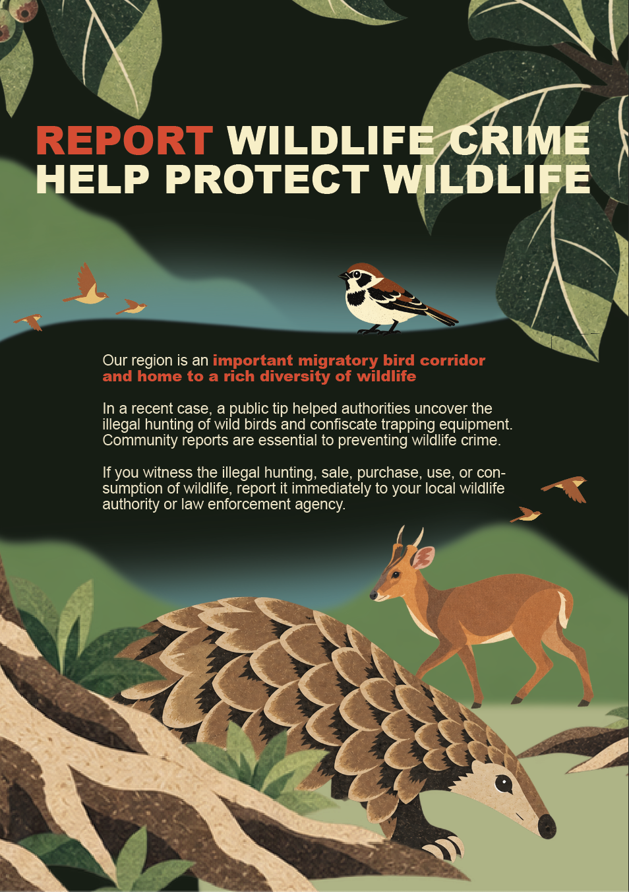
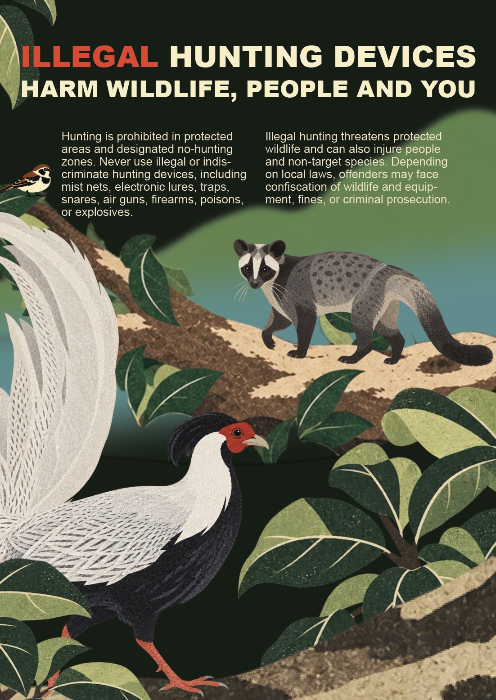

WildAid China · Conservation Communication · 2026

Wildlife-crime reporting poster · 1 of 2

Wildlife-crime reporting poster · 2 of 2
WildAid China needed a public-facing poster pair for communities living alongside forest in eastern Guangdong, where pangolins and other protected species are still hunted illegally. The posters had to work at community display points: read at a glance, by everyone, including people who will never stop for a paragraph of small print.
My first task was breaking the brief down. The pair had to persuade residents to report illegal hunting and make the legal consequences clear without turning either sheet into a wall of text. I designed the posters and their visual elements, drawing the species artwork, composing each layout and adjusting the visual scheme through revision rounds to final delivery.
The animals in the posters are the ones residents actually meet on their own hillsides: the Chinese pangolin, Reeves's muntjac, the silver pheasant and the masked palm civet. Recognition is the persuasion. A poster about an animal nobody has seen is easy to walk past; a poster about the pangolin in the woods behind the village is not.
The first sheet carries the headline and the reason to act. The second sets out what is prohibited, from mist nets and traps to poisons and explosives, and explains that hunting equipment can be confiscated and offences prosecuted. Splitting the message across two sheets keeps each page legible while letting the pair work as one continuous landscape of local species.